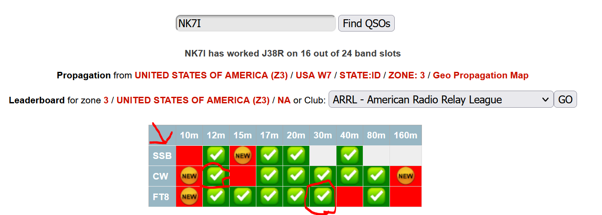
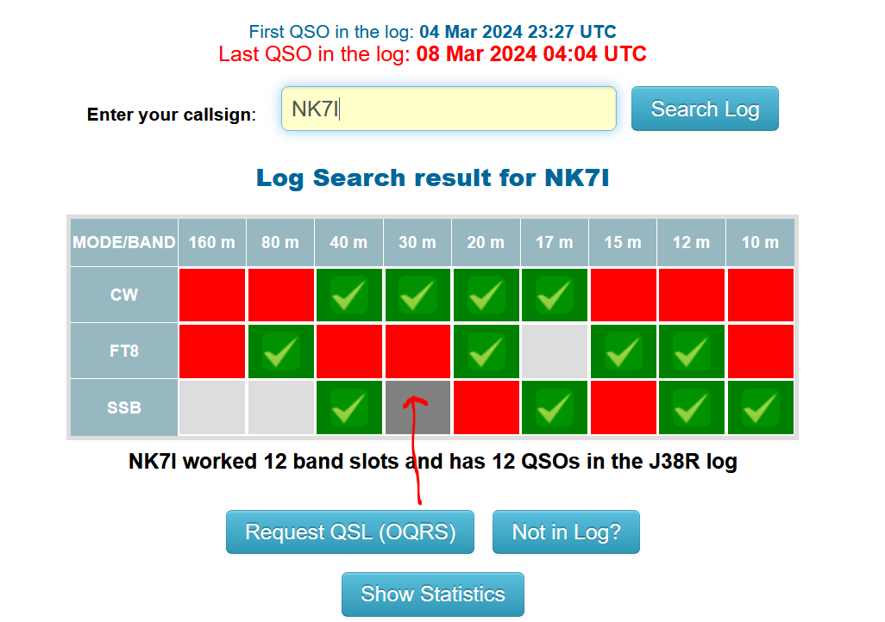

Update: The pilot responded with a note from Tim, m0urx which does not answer the problem, but I'll pass it along:
"I really need your co-operation on this. Please DO NOT email
me about Busted / Missing Calls. On OQRS Log search there is a
blue button for NOT IN LOG inquiries. This sends a ticket to
the QSL Managers work queue. These will be dealt with as soon as
possible.
Emails will be deleted. Do not send files, screen shots logs or
anything like that by email unless asked to do so.
i will answer emails about LoTW, so long as you have checked
your LoTW account first!! Thank you!
"
I am a similar place, what is on Clublog is not on the OQRS site (still missing 10 phone) while what is on OQRS doesn't match Clublog:

While the OQRS site (
https://www.m0urx.com/oqrs/logsearch.php?dxcallsign=J38R )
replaced some, dropped others; neither site is complete. This
hints of incomplete log uploads; they'll have to (at some point)
resubmit all log entries, from each computer on site. That, is
tedious and delays time on the air.
Sometimes this happens AFTER the team has returned home...

So at this point, we can work them again, wait for them to figure it out or let it go.
Just like the man with two watches not knowing what time it is; we don't know which one (if either) is valid.
I suspect that things will settle out eventually. Or hope so at least.
Some (most) of the contacts I made are slot reruns, but I will of course want verification on the new slots, so I do have a pony in this race and if it means their dupe count rises, I'm not concerned.
Now, having said that, a small reminder; it wasn't long ago that there was no online log, no livestream and the op just didn't KNOW what was in the DX log (sometimes, for YEARS). So bear that in mind, add some patience and let them settle the issue please.
Back to the races, 73,
Rick nk7i
I have written the pilot to ask the team for a complete, full entire upload of the log (daily), due to their network outages (as shown by no live log updates or livestream and the green lights were all dark). They are aware of the outages but it has been several hours. It may yet happen tonight, I have no clue what internet access they have.
Some of you have commented to me, privately, of missing entries. That is one of the functions of the pilot, collate issues and suggest fixes. I passed along the concerns of others as well (no names or calls).
IN THE MEANTIME; where it really matters, is the site for OQRS, which is: https://www.m0urx.com/oqrs/logsearch.php?dxcallsign=J38R
My missing 10 phone is there but some others (for others) that are in Clublog are missing from OQRS; so it's my guess that the upload to the OQRS site, is happening now. The two online logbooks, are not synched (yet). Again, Clublog is nice but where the OQRS log lives, matters.
IF the pilot responds, I'll pass it along. But for now that is all that can be done except make another contact for the slot/s. Being that the team is er, well focused and clearly motivated on providing all chances to EU; makes reruns frustrating.
I suggest that if you need to slot, it's um, not the time to go QRP... legal but loud.
73 es GN,
Rick nk7i